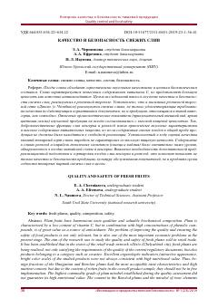

КИChakana savdodagi yangi uzilgan olxo'ri mevalarining sifati va xavfsizligi bo'yicha ilmiy tadqiqot.
Ushbu ilmiy maqola chakana savdo tarmoqlarida sotiladigan yangi uzilgan olxo'ri mevalarining sifati va xavfsizligini tahlil qiladi. Mualliflar mevalarning biokimyoviy tarkibi, toksik elementlar darajasi va saqlash sharoitlarining mahsulot sifatiga ta'sirini o'rganib chiqishgan.